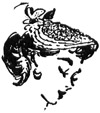

1952—How to Make Hats
by Ruby Carnahan
Flowered Hat
DESCRIPTION
Hats made entirely of flowers may be made on buckram frames, wire frames or on nylon foundations. Small flowers are used when the entire hat is to be made of flowers although turbans or very small hats are sometimes made of larger flowers. Bunches of flowers are taken apart and each flower is sewn or tacked to the hat separately. When making an entire hat of flowers, remember not to use too large a frame or the hat will be top heavy.
FLOWERED HAT MADE ON BUCKRAM
 Cover buckram frame with thin taffeta in the same color as the flowers. Pin
flowers to frame just close enough together to cover foundation. Sew flowers
to frame by tacking in center of flower. If petals need to be sewn to frame,
tack edge of petal only. Avoid sewing flowers on too tightly. If buckram frame
has a brim, plain taffeta facing on underside of brim is pretty and may be
done after all the flowers have been sewn on crown and top of brim.
Cover buckram frame with thin taffeta in the same color as the flowers. Pin
flowers to frame just close enough together to cover foundation. Sew flowers
to frame by tacking in center of flower. If petals need to be sewn to frame,
tack edge of petal only. Avoid sewing flowers on too tightly. If buckram frame
has a brim, plain taffeta facing on underside of brim is pretty and may be
done after all the flowers have been sewn on crown and top of brim.
FLOWERED HAT MADE ON WIRE FRAME
First cover wire frame with sized georgette. Tack flowers to georgette in the same manner as above. In this kind of hat, flowers are also sewn to facing on underside of brim.
FLOWERED HAT MADE ON NYLON FOUNDATION
Arrange and pin flowers on foundation. Bind edge of foundation.